Candidate List 20260516 Previous Day Next Day Section 1: New Sources (age<1d) Cosmological Afterglow
Section 2: Old (1-5d) sources observed last night placeholder
Section 1: New Afterglow/FBOT Cands Last Night (2)
1. ZTF26aawzcjy (Afterglow?FBOT?) [Back to Top] [Share] [Trigger Swift] [Fritz ] [Lasair ]RA, Dec: 131.38617, 51.39505 8h45m32.68s, 51d23m42.17sGalactic (l, b): 167.34098, 38.42812 ext(g-r) = 0.025peak abs mag = -20.48 PS1: 1 source in 3 arcsec Closest: d = 1.11 arcsec photoz=0.08+/-0.04 peak abs mag = -18.30 Consistent with synchrotron, g-r>0!
2. ZTF26aawzvtx (FBOT?) [Back to Top] [Share] [Trigger Swift] [Fritz ] [Lasair ]RA, Dec: 213.42251, -3.2812 14h13m41.40s, -3d-16m-52.32sGalactic (l, b): 339.24321, 53.6894 ext(g-r) = 0.063peak abs mag = -19.51 LegacySurvey: 1 sources in 3 arcsec Closest: d = 1.01 arcsec, 211.4 deg (east of north) photoz=0.17 (68% bounds 0.12, 0.2), type=REX peak abs mag = -19.72 (68% bounds -18.93, -20.15)
Section 2: Older Sources Observed Last Night (38)
0. ZTF26aavgmiw (Afterglow?) [Back to Top] [Share] [Trigger Swift] [Fritz ] [Lasair ]RA, Dec: 201.76085, 60.31026 13h27m2.60s, 60d18m36.92sGalactic (l, b): 114.99936, 56.26625 ext(g-r) = 0.019peak abs mag = -18.65 PS1: 1 source in 3 arcsec Closest: d = 0.73 arcsec photoz=0.09+/-0.02 peak abs mag = -18.50 Consistent with synchrotron, g-r>0!
1. ZTF26aavgnym (Afterglow?FBOT?) [Back to Top] [Share] [Trigger Swift] [Fritz ] [Lasair ]RA, Dec: 191.74013, 44.40317 12h46m57.63s, 44d24m11.41sGalactic (l, b): 125.62221, 72.70169 ext(g-r) = 0.024peak abs mag = -19.95 PS1: 1 source in 3 arcsec Closest: d = 0.66 arcsec photoz=0.19+/-0.01 peak abs mag = -19.95 Consistent with synchrotron, g-r>0!
2. ZTF26aavnfsk (FBOT?) [Back to Top] [Share] [Trigger Swift] [Fritz ] [Lasair ]RA, Dec: 136.92818, 48.82899 9h 7m42.76s, 48d49m44.35sGalactic (l, b): 170.31299, 42.17884 ext(g-r) = 0.025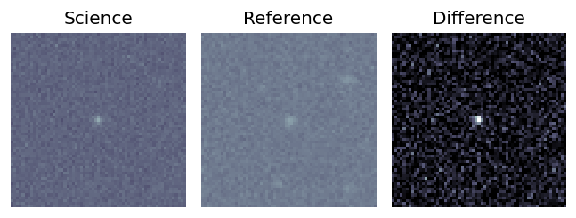
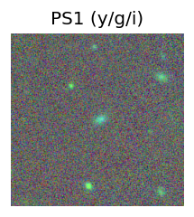
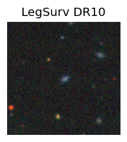
peak abs mag = -20.96 PS1: 1 source in 3 arcsec Closest: d = 1.12 arcsec photoz=0.19+/-0.09 peak abs mag = -22.10 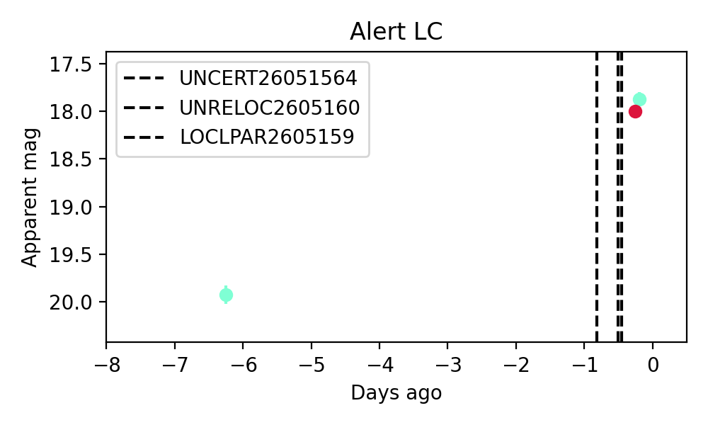
3. ZTF26aavnfwe (FBOT?) [Back to Top] [Share] [Trigger Swift] [Fritz ] [Lasair ]RA, Dec: 135.34666, 54.29393 9h 1m23.20s, 54d17m38.16sGalactic (l, b): 163.26821, 40.4855 ext(g-r) = 0.017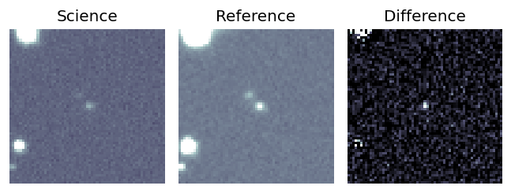
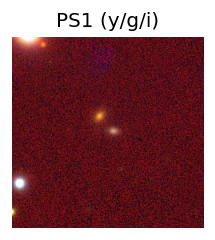
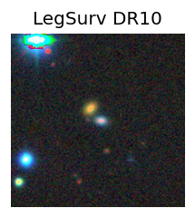
peak abs mag = -19.08 PS1: 1 source in 3 arcsec Closest: d = 1.33 arcsec photoz=0.17+/-0.05 peak abs mag = -20.69 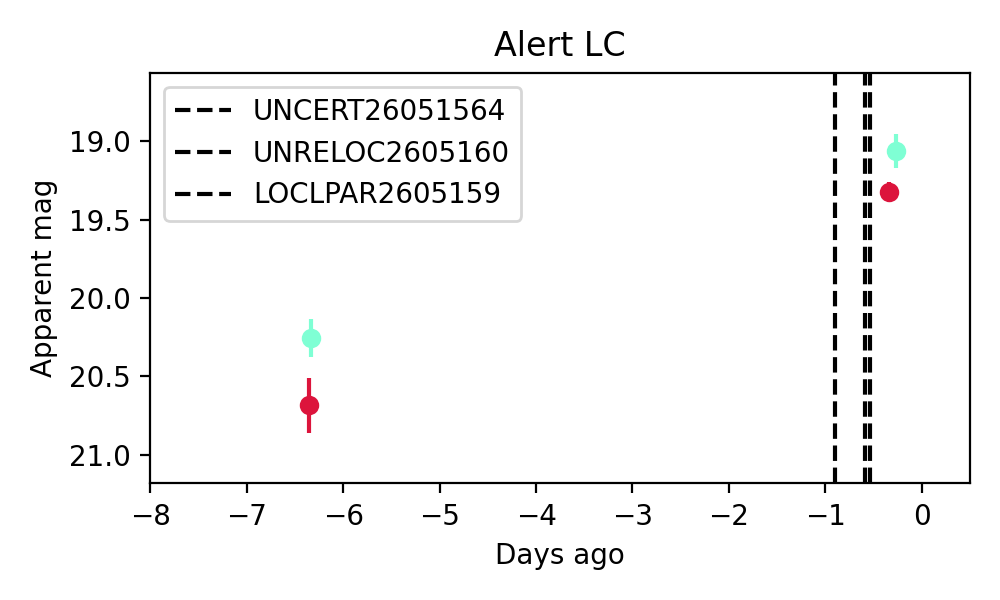
4. ZTF26aavqbzd (FBOT?) [Back to Top] [Share] [Trigger Swift] [Fritz ] [Lasair ]RA, Dec: 206.76805, -1.72251 13h47m4.33s, -1d-43m-21.03sGalactic (l, b): 330.04933, 58.18963 ext(g-r) = 0.044peak abs mag = -21.27 LegacySurvey: 1 sources in 3 arcsec Closest: d = 0.40 arcsec, 292.0 deg (east of north) photoz=0.14 (68% bounds 0.12, 0.19), type=SER peak abs mag = -20.39 (68% bounds -19.91, -21.09) Consistent with synchrotron, g-r>0!
5. ZTF26aavqdbg (Afterglow?) [Back to Top] [Share] [Trigger Swift] [Fritz ] [Lasair ]RA, Dec: 203.39262, -20.63455 13h33m34.23s, -20d-38m-4.38sGalactic (l, b): 316.0661, 41.1602 ext(g-r) = 0.087 Consistent with synchrotron, g-r>0!
6. ZTF26aawcshf (Afterglow?) [Back to Top] [Share] [Trigger Swift] [Fritz ] [Lasair ]RA, Dec: 251.13188, -27.25509 16h44m31.65s, -27d-15m-18.33sGalactic (l, b): 353.54756, 11.96106 WARNING: -4.91 deg from ecliptic plane ext(g-r) = 0.351
7. ZTF26aawfdna (Afterglow?) [Back to Top] [Share] [Trigger Swift] [Fritz ] [Lasair ]RA, Dec: 212.31908, 76.64907 14h 9m16.58s, 76d38m56.65sGalactic (l, b): 117.20196, 39.60061 ext(g-r) = 0.037PS1: 1 source in 3 arcsec Closest: d = 1.15 arcsec photoz=0.09+/-0.01 peak abs mag = -19.31 Consistent with synchrotron, g-r>0!
8. ZTF26aawfwqy (Afterglow?) [Back to Top] [Share] [Trigger Swift] [Fritz ] [Lasair ]RA, Dec: 251.39884, 19.6753 16h45m35.72s, 19d40m31.08sGalactic (l, b): 38.30617, 36.22103 ext(g-r) = 0.086peak abs mag = -18.87 LegacySurvey: 1 sources in 3 arcsec Closest: d = 0.83 arcsec, 312.6 deg (east of north) photoz=0.09 (68% bounds 0.08, 0.09), type=SER peak abs mag = -18.77 (68% bounds -18.64, -18.87) Consistent with synchrotron, g-r>0!
9. ZTF26aawfzvt (Afterglow?) [Back to Top] [Share] [Trigger Swift] [Fritz ] [Lasair ]RA, Dec: 233.63059, 31.61735 15h34m31.34s, 31d37m2.45sGalactic (l, b): 50.16546, 54.39125 ext(g-r) = 0.027peak abs mag = -18.65 LegacySurvey: 1 sources in 3 arcsec Closest: d = 3.07 arcsec, 296.4 deg (east of north) photoz=0.07 (68% bounds 0.07, 0.08), type=SER peak abs mag = -18.49 (68% bounds -18.26, -18.7) Consistent with synchrotron, g-r>0!
10. ZTF26aawgeif (Afterglow?) [Back to Top] [Share] [Trigger Swift] [Fritz ] [Lasair ]RA, Dec: 259.87719, -13.77216 17h19m30.52s, -13d-46m-19.76sGalactic (l, b): 9.64784, 13.23528 ext(g-r) = 0.498
11. ZTF26aawggyc (Afterglow?) [Back to Top] [Share] [Trigger Swift] [Fritz ] [Lasair ]RA, Dec: 277.26945, 2.97515 18h29m4.67s, 2d58m30.54sGalactic (l, b): 33.03774, 6.32935 ext(g-r) = 0.684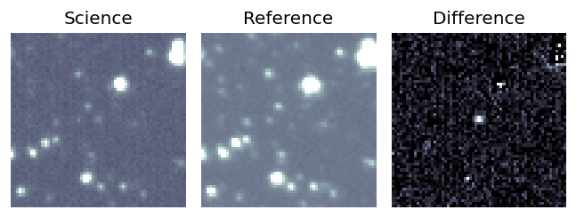
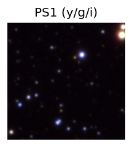
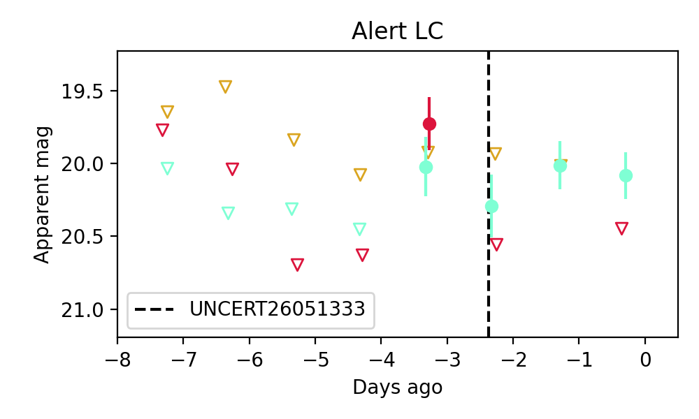
12. ZTF26aawgjqd (Afterglow?) [Back to Top] [Share] [Trigger Swift] [Fritz ] [Lasair ]RA, Dec: 282.48187, 16.15098 18h49m55.65s, 16d 9m3.52sGalactic (l, b): 47.2235, 7.61262 ext(g-r) = 0.459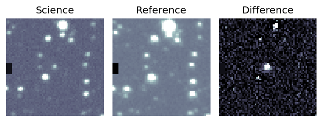
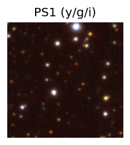
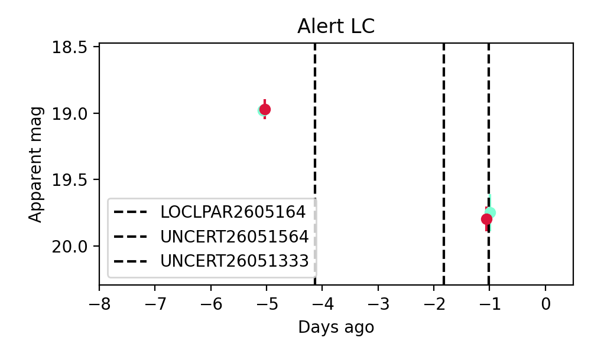
13. ZTF26aawiggz (FBOT?) [Back to Top] [Share] [Trigger Swift] [Fritz ] [Lasair ]RA, Dec: 184.07966, 12.07823 12h16m19.12s, 12d 4m41.63sGalactic (l, b): 272.53506, 72.84332 ext(g-r) = 0.031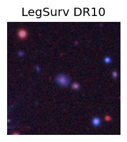
peak abs mag = -18.78 LegacySurvey: 1 sources in 3 arcsec Closest: d = 1.15 arcsec, 10.6 deg (east of north) photoz=0.4 (68% bounds 0.12, 1.08), type=EXP peak abs mag = -20.47 (68% bounds -17.64, -23.11)
14. ZTF26aawilct (FBOT?) [Back to Top] [Share] [Trigger Swift] [Fritz ] [Lasair ]RA, Dec: 212.36841, 14.40156 14h 9m28.42s, 14d24m5.63sGalactic (l, b): 1.85511, 67.81097 ext(g-r) = 0.021LegacySurvey: 1 sources in 3 arcsec Closest: d = 1.55 arcsec, 355.1 deg (east of north) photoz=0.46 (68% bounds 0.37, 0.64), type=REX peak abs mag = -23.0 (68% bounds -22.47, -23.86) Consistent with synchrotron, g-r>0!
15. ZTF26aawiode (FBOT?) [Back to Top] [Share] [Trigger Swift] [Fritz ] [Lasair ]RA, Dec: 201.21454, 46.11012 13h24m51.49s, 46d 6m36.44sGalactic (l, b): 105.88933, 69.89646 ext(g-r) = 0.025PS1: 1 source in 3 arcsec Closest: d = 8.81 arcsec photoz=0.77+/-0.13 peak abs mag = -24.80
16. ZTF26aawjywa (FBOT?) [Back to Top] [Share] [Trigger Swift] [Fritz ] [Lasair ]RA, Dec: 236.5931, -9.57484 15h46m22.34s, -9d-34m-29.43sGalactic (l, b): 358.18034, 33.93598 ext(g-r) = 0.193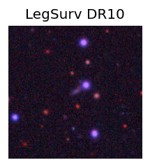
LegacySurvey: 1 sources in 3 arcsec Closest: d = 0.67 arcsec, 301.7 deg (east of north) photoz=0.11 (68% bounds 0.08, 0.14), type=EXP peak abs mag = -19.22 (68% bounds -18.49, -19.73) Consistent with synchrotron, g-r>0!
17. ZTF26aawlqmn (Afterglow?) [Back to Top] [Share] [Trigger Swift] [Fritz ] [Lasair ]RA, Dec: 247.09216, 32.85117 16h28m22.12s, 32d51m4.22sGalactic (l, b): 53.72839, 43.18512 ext(g-r) = 0.023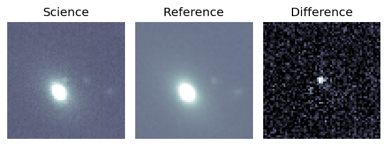
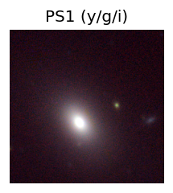
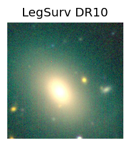
peak abs mag = -16.05 PS1: 1 source in 3 arcsec Closest: d = 7.41 arcsec photoz=0.03+/-0.00 peak abs mag = -16.74 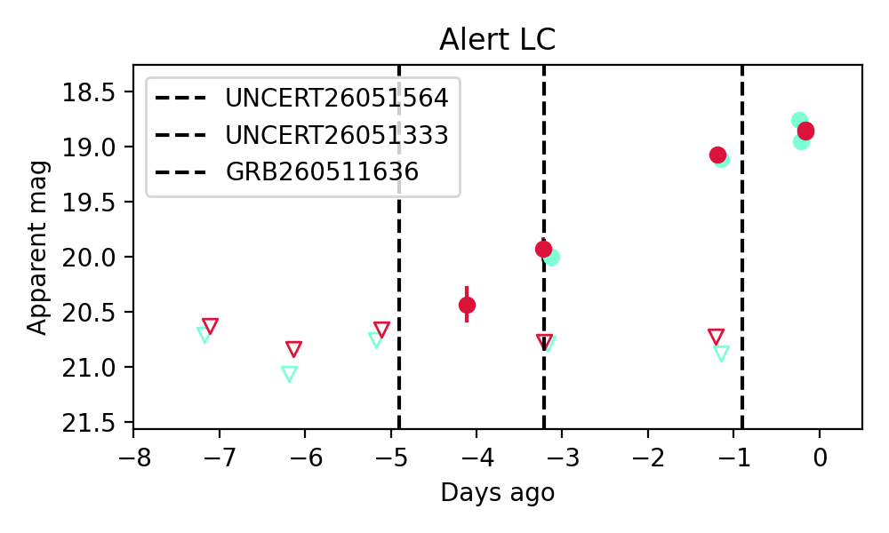
18. ZTF26aawtbkb (Afterglow?) [Back to Top] [Share] [Trigger Swift] [Fritz ] [Lasair ]RA, Dec: 185.84965, 12.94603 12h23m23.92s, 12d56m45.69sGalactic (l, b): 276.7293, 74.37349 ext(g-r) = 0.046peak abs mag = -18.18 LegacySurvey: 1 sources in 3 arcsec Closest: d = 5.07 arcsec, 64.7 deg (east of north) photoz=0.03 (68% bounds 0.03, 0.04), type=SER peak abs mag = -17.29 (68% bounds -16.86, -17.81)
19. ZTF26aawtwql (FBOT?) [Back to Top] [Share] [Trigger Swift] [Fritz ] [Lasair ]RA, Dec: 228.87648, -14.50352 15h15m30.35s, -14d-30m-12.68sGalactic (l, b): 347.4001, 35.64233 WARNING: 3.46 deg from ecliptic plane ext(g-r) = 0.141LegacySurvey: 1 sources in 3 arcsec Closest: d = 0.13 arcsec, 239.4 deg (east of north) photoz=0.09 (68% bounds 0.05, 0.21), type=REX peak abs mag = -19.41 (68% bounds -18.12, -21.42)
20. ZTF26aawvxly (Afterglow?) [Back to Top] [Share] [Trigger Swift] [Fritz ] [Lasair ]RA, Dec: 213.31452, 43.67039 14h13m15.48s, 43d40m13.41sGalactic (l, b): 83.32791, 66.63832 ext(g-r) = 0.008peak abs mag = -18.50 PS1: 1 source in 3 arcsec Closest: d = 2.97 arcsec photoz=0.07+/-0.01 peak abs mag = -18.10 Consistent with synchrotron, g-r>0!
21. ZTF26aawyldf (FBOT?) [Back to Top] [Share] [Trigger Swift] [Fritz ] [Lasair ]RA, Dec: 173.30642, 2.93008 11h33m13.54s, 2d55m48.28sGalactic (l, b): 261.86773, 59.41513 WARNING: 0.03 deg from ecliptic plane ext(g-r) = 0.029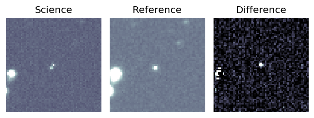
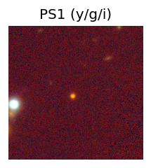
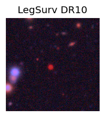
LegacySurvey: 1 sources in 3 arcsec Closest: d = 2.51 arcsec, 143.6 deg (east of north) photoz=0.11 (68% bounds 0.03, 0.99), type=PSF peak abs mag = -19.58 (68% bounds -16.36, -25.1) 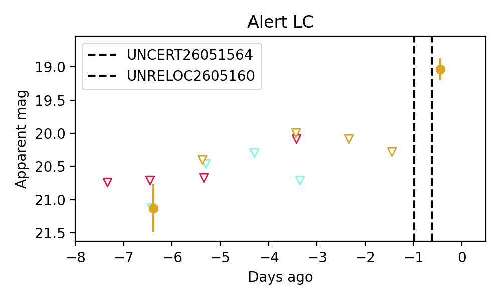
22. ZTF26aawywnt (Afterglow?FBOT?) [Back to Top] [Share] [Trigger Swift] [Fritz ] [Lasair ]RA, Dec: 184.00416, 12.58144 12h16m1.00s, 12d34m53.18sGalactic (l, b): 271.50376, 73.25351 ext(g-r) = 0.036peak abs mag = -21.04 LegacySurvey: 1 sources in 3 arcsec Closest: d = 0.81 arcsec, 314.7 deg (east of north) photoz=0.26 (68% bounds 0.25, 0.27), type=SER peak abs mag = -20.69 (68% bounds -20.55, -20.83)
23. ZTF26aawzbhs (Afterglow?) [Back to Top] [Share] [Trigger Swift] [Fritz ] [Lasair ]RA, Dec: 154.38168, 29.04463 10h17m31.60s, 29d 2m40.66sGalactic (l, b): 200.49096, 56.14842 ext(g-r) = 0.035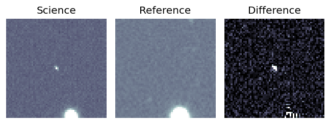
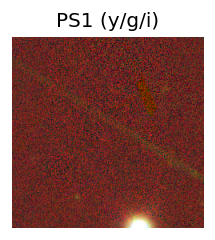
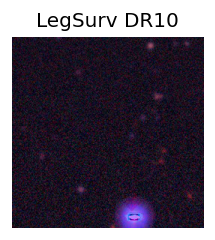
LegacySurvey: 1 sources in 3 arcsec Closest: d = 8.69 arcsec, 261.0 deg (east of north) photoz=1.16 (68% bounds 0.92, 1.38), type=PSF peak abs mag = -25.57 (68% bounds -24.95, -26.03) 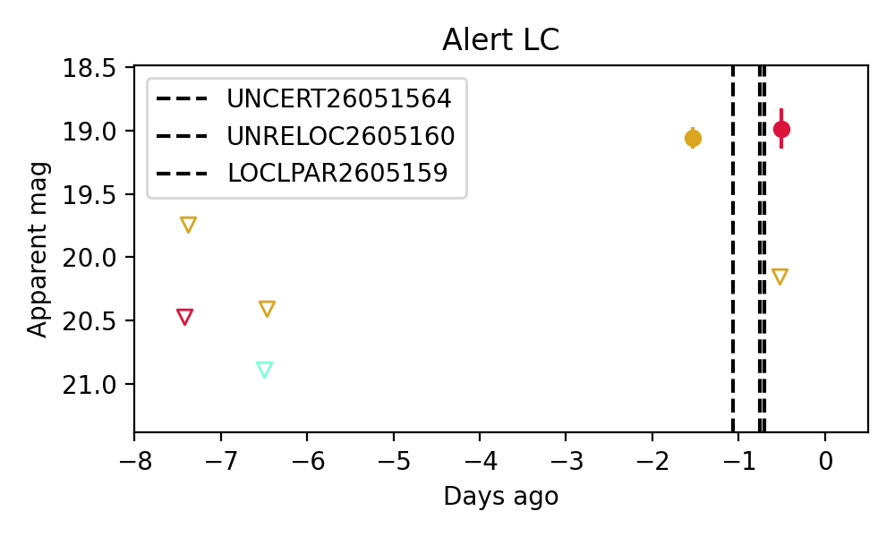
24. ZTF26aawzbwc (FBOT?) [Back to Top] [Share] [Trigger Swift] [Fritz ] [Lasair ]RA, Dec: 156.27989, 9.40633 10h25m7.17s, 9d24m22.78sGalactic (l, b): 233.08688, 51.22406 WARNING: -0.45 deg from ecliptic plane ext(g-r) = 0.042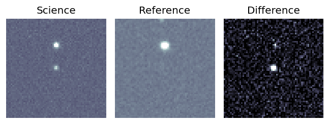
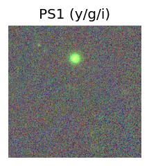
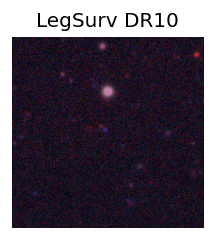
peak abs mag = -24.36 LegacySurvey: 1 sources in 3 arcsec Closest: d = 1.30 arcsec, 48.5 deg (east of north) photoz=1.37 (68% bounds 1.05, 1.82), type=REX peak abs mag = -26.16 (68% bounds -25.43, -26.9) 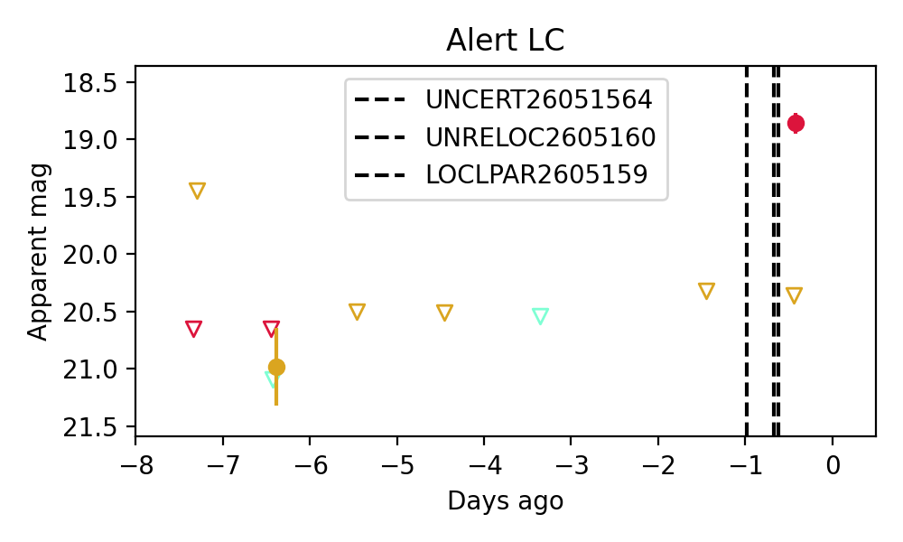
25. ZTF26aawzhjp (FBOT?) [Back to Top] [Share] [Trigger Swift] [Fritz ] [Lasair ]RA, Dec: 198.56455, 2.07119 13h14m15.49s, 2d 4m16.28sGalactic (l, b): 316.20106, 64.35343 ext(g-r) = 0.027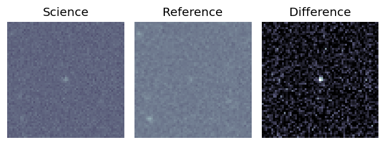
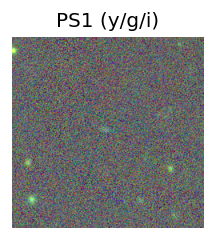
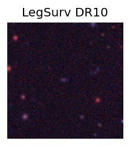
peak abs mag = -21.24 LegacySurvey: 1 sources in 3 arcsec Closest: d = 0.99 arcsec, 74.4 deg (east of north) photoz=0.26 (68% bounds 0.19, 0.39), type=EXP peak abs mag = -20.33 (68% bounds -19.55, -21.3) 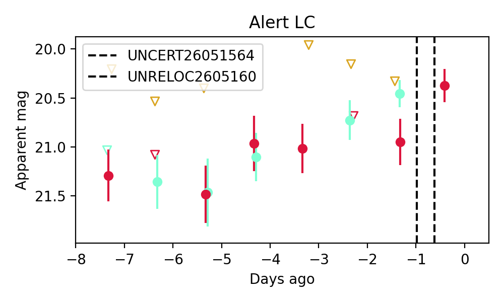
26. ZTF26aawzpcp (Afterglow?FBOT?) [Back to Top] [Share] [Trigger Swift] [Fritz ] [Lasair ]RA, Dec: 185.98626, 21.20115 12h23m56.70s, 21d12m4.12sGalactic (l, b): 254.86014, 81.37497 ext(g-r) = 0.026peak abs mag = -19.73 LegacySurvey: 1 sources in 3 arcsec Closest: d = 0.54 arcsec, 44.3 deg (east of north) photoz=0.19 (68% bounds 0.12, 0.25), type=EXP peak abs mag = -19.85 (68% bounds -18.73, -20.56) Consistent with synchrotron, g-r>0!
27. ZTF26aawzwus (FBOT?) [Back to Top] [Share] [Trigger Swift] [Fritz ] [Lasair ]RA, Dec: 205.23635, 8.31931 13h40m56.72s, 8d19m9.53sGalactic (l, b): 337.14448, 67.83972 ext(g-r) = 0.032LegacySurvey: 1 sources in 3 arcsec Closest: d = 0.83 arcsec, 215.0 deg (east of north) photoz=1.19 (68% bounds 0.61, 1.59), type=REX peak abs mag = -24.55 (68% bounds -22.77, -25.33) Consistent with synchrotron, g-r>0!
28. ZTF26aaxasvg (Afterglow?FBOT?) [Back to Top] [Share] [Trigger Swift] [Fritz ] [Lasair ]RA, Dec: 206.77515, 18.25421 13h47m6.04s, 18d15m15.14sGalactic (l, b): 1.14186, 74.41306 ext(g-r) = 0.025peak abs mag = -17.51 LegacySurvey: 1 sources in 3 arcsec Closest: d = 0.48 arcsec, 83.0 deg (east of north) photoz=0.38 (68% bounds 0.23, 0.72), type=EXP peak abs mag = -21.46 (68% bounds -20.22, -23.1) Consistent with synchrotron, g-r>0!
29. ZTF26aaxbdgg (FBOT?) [Back to Top] [Share] [Trigger Swift] [Fritz ] [Lasair ]RA, Dec: 235.00599, -2.04666 15h40m1.44s, -2d-2m-47.97sGalactic (l, b): 4.06743, 40.02782 ext(g-r) = 0.155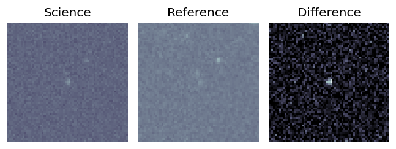
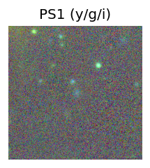
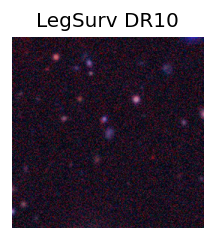
peak abs mag = -18.30 LegacySurvey: 1 sources in 3 arcsec Closest: d = 0.60 arcsec, 230.6 deg (east of north) photoz=0.2 (68% bounds 0.14, 0.27), type=SER peak abs mag = -19.46 (68% bounds -18.69, -20.27) 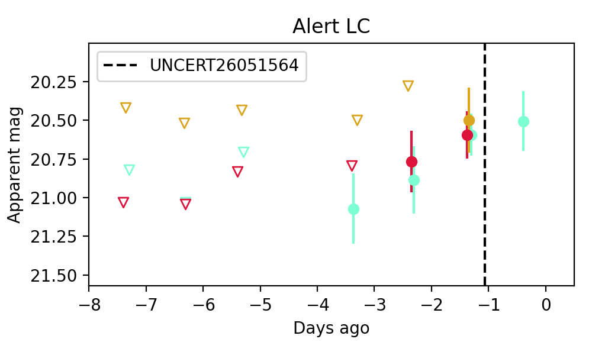
Consistent with synchrotron, g-r>0!
30. ZTF26aaxboad (FBOT?) [Back to Top] [Share] [Trigger Swift] [Fritz ] [Lasair ]RA, Dec: 260.75095, 49.9077 17h23m0.23s, 49d54m27.70sGalactic (l, b): 76.63876, 34.37112 ext(g-r) = 0.025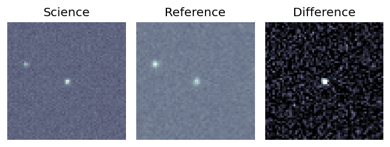
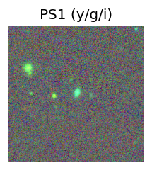
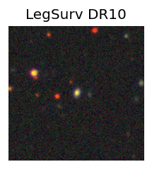
PS1: 1 source in 3 arcsec Closest: d = 0.33 arcsec photoz=0.20+/-0.08 peak abs mag = -19.92 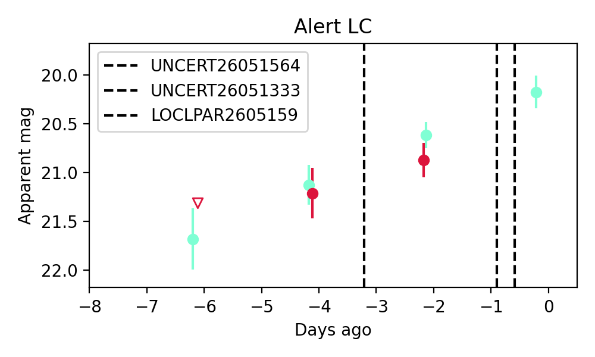
31. ZTF26aaxcrta (Afterglow?) [Back to Top] [Share] [Trigger Swift] [Fritz ] [Lasair ]RA, Dec: 244.92146, -7.43186 16h19m41.15s, -7d-25m-54.71sGalactic (l, b): 6.24511, 28.9205 ext(g-r) = 0.314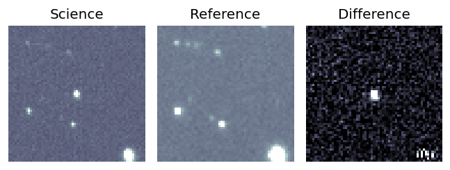
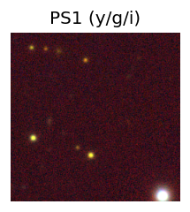
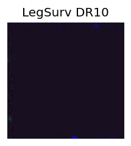
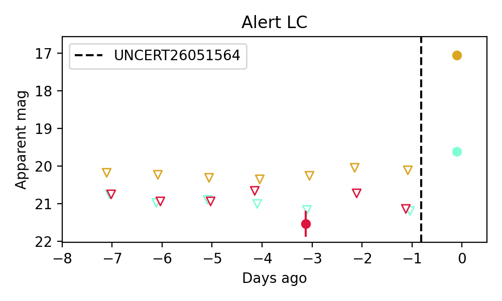
Consistent with synchrotron, g-r>0!
32. ZTF26aaxczvh (Afterglow?) [Back to Top] [Share] [Trigger Swift] [Fritz ] [Lasair ]RA, Dec: 243.6371, -4.40916 16h14m32.90s, -4d-24m-32.97sGalactic (l, b): 8.19311, 31.73876 ext(g-r) = 0.222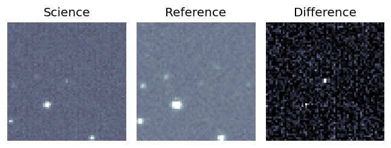
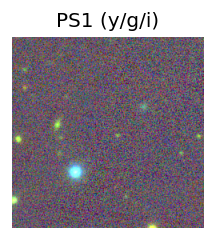
33. ZTF26aaxdirw (Afterglow?) [Back to Top] [Share] [Trigger Swift] [Fritz ] [Lasair ]RA, Dec: 260.95834, -19.75698 17h23m50.00s, -19d-45m-25.14sGalactic (l, b): 5.10502, 9.10781 WARNING: 3.42 deg from ecliptic plane ext(g-r) = 0.848 Consistent with synchrotron, g-r>0!
34. ZTF26aaxdnjs (Afterglow?) [Back to Top] [Share] [Trigger Swift] [Fritz ] [Lasair ]RA, Dec: 269.15332, 12.18455 17h56m36.80s, 12d11m4.38sGalactic (l, b): 37.88111, 17.59977 ext(g-r) = 0.178 Consistent with synchrotron, g-r>0!
35. ZTF26aaxdqna (FBOT?) [Back to Top] [Share] [Trigger Swift] [Fritz ] [Lasair ]RA, Dec: 274.93699, -10.27955 18h19m44.88s, -10d-16m-46.39sGalactic (l, b): 20.17407, 2.25404 ext(g-r) = 2.101PS1: 1 source in 3 arcsec Closest: d = 2.10 arcsec photoz=0.17+/-0.04 peak abs mag = -24.59
36. ZTF26aaxdskb (Afterglow?) [Back to Top] [Share] [Trigger Swift] [Fritz ] [Lasair ]RA, Dec: 248.49674, 9.37815 16h33m59.22s, 9d22m41.33sGalactic (l, b): 25.31552, 34.74496 ext(g-r) = 0.094LegacySurvey: 1 sources in 3 arcsec Closest: d = 8.10 arcsec, 195.9 deg (east of north) photoz=0.21 (68% bounds 0.05, 0.5), type=PSF peak abs mag = -21.43 (68% bounds -17.91, -23.55)
37. ZTF26aaxenkc (FBOT?) [Back to Top] [Share] [Trigger Swift] [Fritz ] [Lasair ]RA, Dec: 260.50737, 9.57732 17h22m1.77s, 9d34m38.37sGalactic (l, b): 31.4924, 24.18025 ext(g-r) = 0.118LegacySurvey: 1 sources in 3 arcsec Closest: d = 2.15 arcsec, 99.4 deg (east of north) photoz=0.24 (68% bounds 0.07, 0.42), type=PSF peak abs mag = -21.7 (68% bounds -18.67, -23.08)